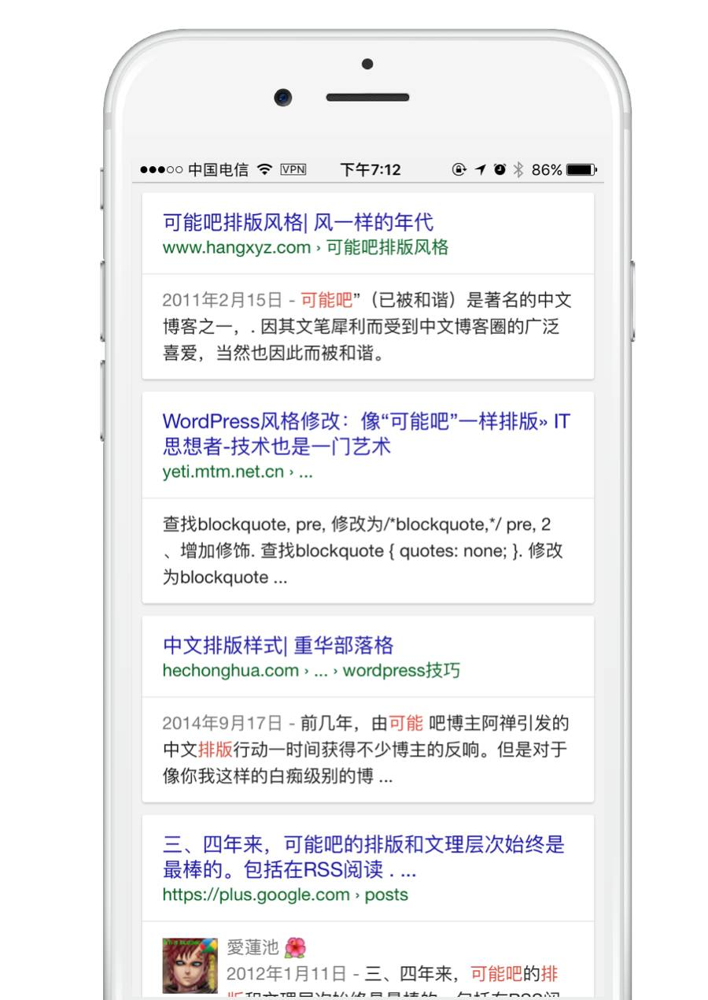
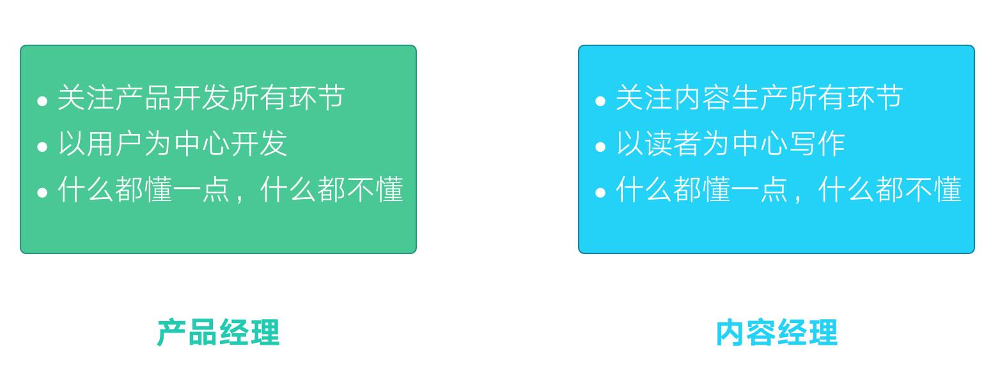
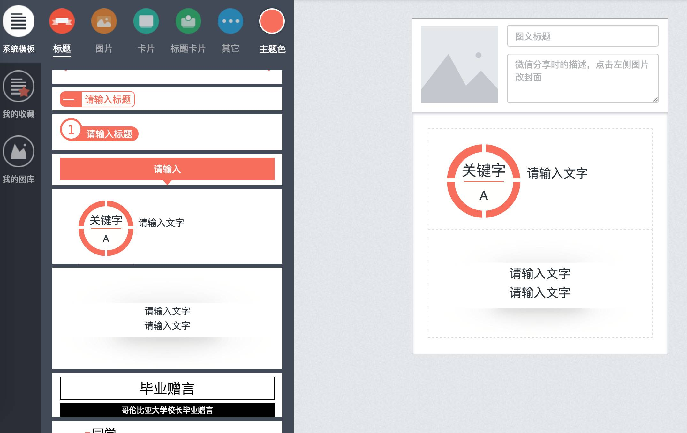
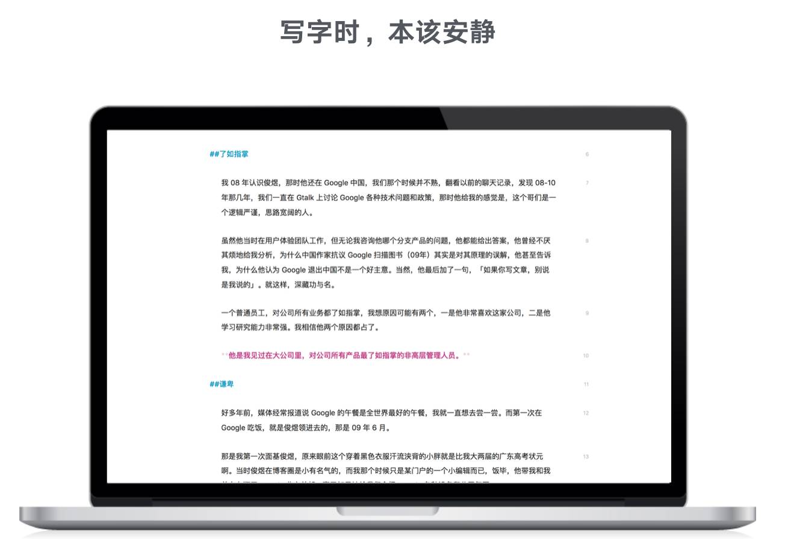

-
1
排版不仅是锦上添花
2006 年，我开始写博客，当时信奉的是内容是核心，排版并不重要。但自从 2008 年看了一些与屏幕阅读体验相关的研究报告后，我开始重视排版，开始在博客上尝试不同的排版方式。不能说我的排版是最好看的，但在小圈子内，是受到关注的。如果你在 Google 搜索「可能吧 排版」，可以找到不少别人研究当年我如何排版的文章。
良好的排版不仅让人赏心悦目，更重要的是，我们可以适当地调整排版，让内容的呈现符合用户在屏幕上的阅读习惯。
我在「有可能学院」里有一个主讲课程《微信内容运营》，在这个课程里我定义了一种新岗位： 内容经理 。
产品经理关注用户需求，以用户需求出发开发功能，产品经理样样都不专，但样样都懂一点。内容经理不再是传统意义上的记者或编辑，而是关注内容生产流水线上方方面面的角色，他们以读者的需求出发去制作内容，看起来样样都不专，但样样都懂一点。
注意前面说的「制作」二字，在关注读者需求的年代，内容不纯粹是写，而是「制作」。而在「制作」的过程中，阅读体验和阅读习惯就是内容经理必须去关心的环节了，它们不是锦上添花，而是整个内容生产流水线上必不可少的部分。
-
2
什么是写作规律？
我的文章一般都比较长，比如《别开发 app 了》，有 8000 多字，比如《为什么 Google 没有虚假医疗广告》有 6000 多字。这些文章都是一气呵成写出来的，前者我大约写了 5 小时，后者写了 4 小时。
然而，写作的时间并不是主要的，主要时间花在素材的收集。比如写《别开发 app 了》这篇文章之前，我把微信公众平台的 API 文档和 Google PWA 文档都看了一遍，又在 Google 搜集了大量资料，最后才开始写作。
当收集完所有的素材，将这些素材装入脑中后，我就开始闭关写作。
一气呵成的意思是我收集了足够的素材，并把自己置于在一个他人无法打扰的空间，比如家里，比如咖啡厅，比如酒店，从第一个字一直最后一个字，把文章写完。
我尝试过分多次写文章，结果都不满意，因为这会让一篇文章的情绪不连贯。比如我今天觉得支付宝脑子进了屎，于是写了半篇文章，第二天可能我觉得其实还好，他们只是进了水而已。这样，文章前后的情绪就会不一致。这样的文章，会让读者感到迷惑。
所以，我习惯性一气呵成写一篇文章。相信大多数写作者，也有着这样的习惯。
-
3
为什么我不用任何微信排版器？
微信公众平台的编辑器功能确实很弱，光用它默认的功能，很难做出优秀的排版。于是有不少公司开发了微信排版器。
几乎所有的微信排版器，页面结构都和下面这款排版器类似：
用户在左侧选择内容类型，然后选择一种样式，编辑器里就会出现包含样式的卡片，用户接下来就是在卡片里填充内容。
我之所以不用任何排版器，原因包括：
第 3 点是重点。
写作是一气呵成的过程，但大多数微信排版器把一气呵成的过程人为地割裂开了。本来，你写完小标题，接下来应该马上敲键盘写内容，但在这些排版器里，你需要先选择一个模板，然后再在模板里填充内容。你不得不中断你的写作，把手从键盘移到鼠标上，然后再回到键盘上。
对我来说，这种体验是糟糕的。
有人可能会说，你可以先在一个写字板里写好，然后在排版器里一部分一部分粘贴进去啊，这样不就可以先一气呵成写完，然后「专心」排版么？
你想想，《别开发 app 了》这篇文章 8000 字，二级标题、三级标题加起来 10 来 20 个，我需要费多少劲才能完成排版？
对我来说，这种体验依然很糟糕。
-
4
可能吧的文章是如何排版的？
昨天一个有可能学院的学员问我，我每次写文章花多少时间去排版，我的回答是，快的时候 1 秒钟，但一般都需要 10-20 秒。
我是这样写作和排版的。
-
4.1
在一个安静的编辑器里开始敲字
在 Mac 和 iPhone 上，我都购买了 Ulysses，我认为它是最好的写字工具，因为它足够安静：
如上图所示，我写作时常常全屏，一气呵成地把文章写完。
-
4.2
使用 Markdown
Markdown 是一种专门给写作者用的排版语言，它并非编程语言，学会 Markdown 一般只需要 5-10 分钟。
使用 Markdown 的好处是，当你需要对文字进行排版时，双手不需要离开键盘。比如你需要写二级标题，就在文字前面加两个 # 号，三级标题就是加 3 个 # 号。需要对文字加粗，就在文字两边分别加两个星号。
-
-
5
问题来了，如何一键排版？
没有做过个人主页或没有技术背景的人，看前面的排版流程可能会有点一头雾水。其实并不难，我不是技术出身，也不是设计师出身，所有的设计和排版代码都是通过 Google 学习和尝试出来的。
如果你一点都不懂 HTML 和 CSS ，你有两种选择：
-
5.1
选择一
这是最佳选择。
-
5.2
选择二
这是最佳选择。
-
-
6
别依赖模板式教程
以上，就是我的排版方法。
我不会在这篇文章，也不会在以后的文章里告诉你，排版时字号应该取多少、应该用什么颜色、行距应该多高。
实际上，你能很容易在网上找到各种（微信）排版教程，告诉你应该用 16px 的字体大小、应该用 #888 的字体颜色、行距应该用 1.2 rem 等。
别把这些教程当铁规，如果一个人告诉你，微信排版，16px 的字体大小是最好的，千万别信。所有模板式教程，都是在传授范例，你跟着这些范例走一遍是好事，会获得不少灵感，但千万不要照搬，因为不同的公众号、不同的内容类型，对排版的要求是不一样的。
关键是要多尝试。Google 是我们尝试所有东西的好帮手。还有，无论怎样尝试，电脑都不会坏掉，怕什么？